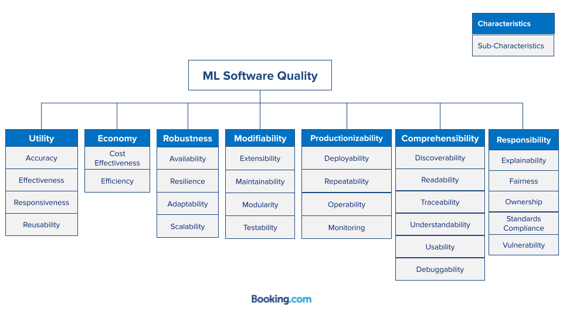

A Software Quality Model for ML Systems
Introduction
Defining and measuring quality of software is a challenging task traditionally addressed by the Software Engineering discipline by means of Software Quality Models.
A Software Quality Model represents and articulates all relevant aspects of a software system that constitute its quality. It enables organizations to turn the otherwise ambiguous concept of quality into a practical and actionable tool to construct better software.
The ML Quality Model
Our Quality Model consists of a collection of characteristics we identified as fundamental for the overall quality of a Machine Learning System. Characteristics are rather abstract and hard to influence directly, therefore they are further decomposed into sub-characteristics. These sub-characteristics are concrete enough to be directly affected by specific software development practices.
 A schematic representation the quality model for Machine Learning systems.
Characteristic details
Details of the characteristics mentioned in the diagram above are available here
Sub-characteristic details
Definitions of sub-characteristics are available here.
Details of the sub-characteristics are available here.